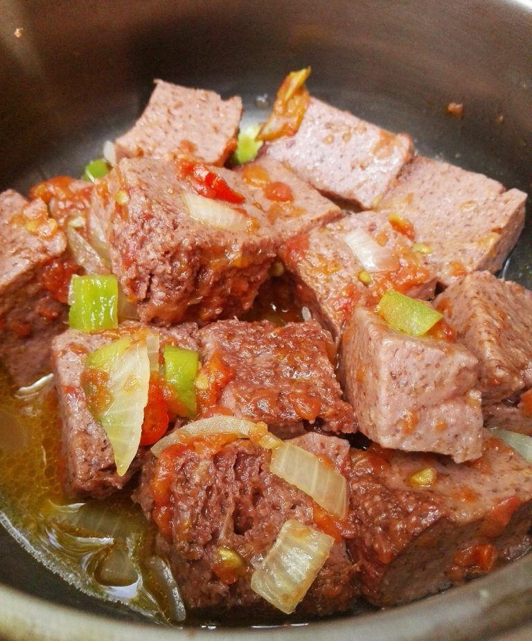

Ichinyeka(Chikanda)to be eaten with Nshima
ICHINYEKA OR CHIKANDA
ICHINYEKA is one of the favourite recipes of Zambia and liked so much in
central province of Zambia, more especially the Lala tribe. It is also
taken in most parts of Zambia, more especially in Coperbelt and Lusaka
Provinces. In Lusaka and Kitwe also most parts of the Copperbelt Provinces
it hast been observed that most of the people takes it as a snack in streets,
work place, every were.
In the central province of Zambia It is called Ichinyeka and it is taken with a
staple food called Inshima. Nevertheless in most parts of Zambia almost every one
likes it. Most of the people likes taking it as a snack and likes it with chili
(insobole in Lala). Chikanda or Ichinyeka can be fried or even cooked with pot roasted ground
nuts.
Ingredients
- Ochid powder (pounded Ichinyeka or Chikanda)
- Groundnuts powder (Imbalala)
- Soda
- Salt
- Water
- Chili (option)
- Tomatoes (option)
- Onion (option)
- Tomatoe Source (option)
The video bellow shows how to cook Ichinyeka or Chikanda
Steps
- Put cold water in a port and add powdered groundnuts
- make a paste then heat gently while stirring untill the paste
starts boiling.
- Now start adding powdered Ochid or Ichinyeka (Chikanda)
- add a bit of soda just a bit on a tea spoon
- Add salt and continue stirring wile adding your powdered Ochid or Ichinyeka untill it becomes thick
- if you like chili you can add a bit of it before your recipe become thick
- Now put in a Oven or cover you port with a lid and put fire on top
of the lid. The Leave it for 10 to 15 minutes so that it become Chocolate brown
- You can now put it on a Pilate plate or a tray a chop it it into
desired peaces.
- You can now boil or fly. there after add Choped tomatoes,
Onion, green paper or and your other favourite spices.